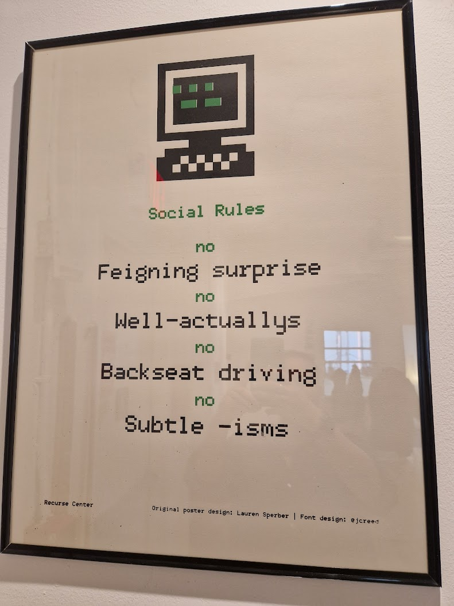
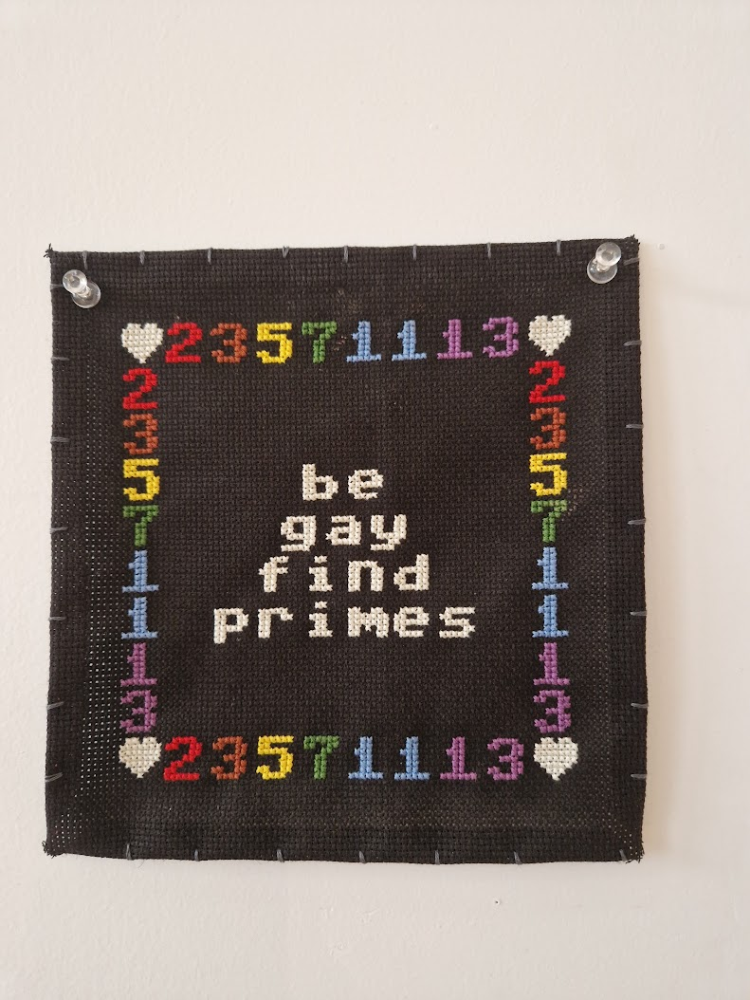
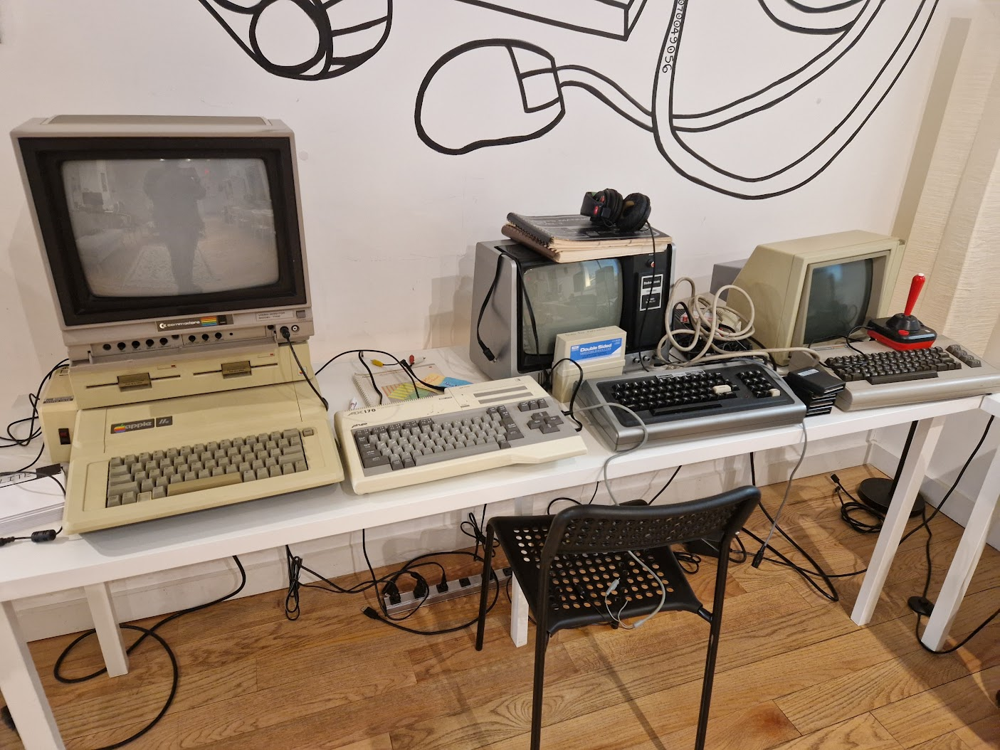
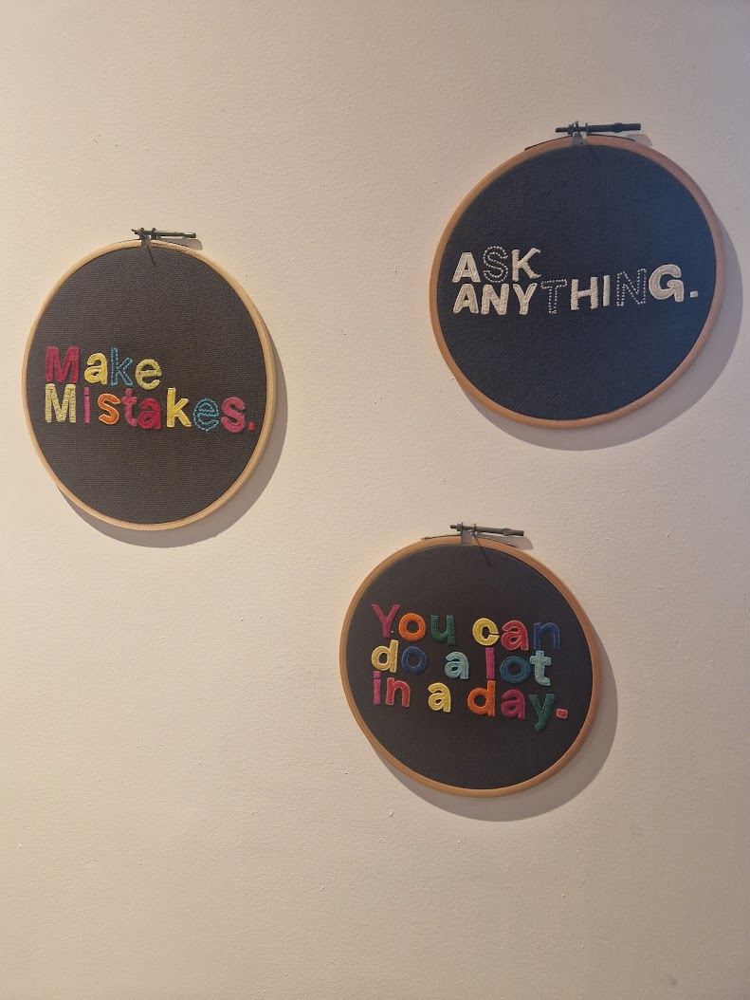

I spent 3 months earlier this year at Recurse Center in New York. Here’s a summary of the highlights of my time there!
What is Recurse Center?
The simplest explanation of what Recurse Center is is that it’s like a writer’s retreat but for programmers. Participants have to apply to get in, and there are 3 stages. The first is a written application, followed by a conversational interview, and then a pair programming interview. Generally, the intention is to assess whether you’ll be a good fit for RC. The selection criteria are stated explicitly on the website, but to summarise, they’re looking for self-motivated people who enjoy programming and are pleasant to be around. It’s not about being an amazing programmer; though I met some people with seriously impressive skills there, I also met newer programmers who were enthusiastic and engaged.
RC can be attended remotely online or in person, but I opted for the in-person experience to get the most out of it. The hub, the in-person location is in Brooklyn, and takes up 2 floors of an office building. The 4th floor is the main floor where people code, socialise, do pair programming, and hang out in the kitchen, presentation space, or the meeting rooms. The 5th floor is the quiet floor where people can do more focused work without interruption.
RC has a code of conduct, as well as 4 more general social rules:
- No well-actually’s
- No feigned surprise
- No backseat driving
- No subtle -isms

As well as social rules about what not to do, there are 3 guiding principles, or self-directives, about what to do:
- Work at the edge of your abilities
- Build your volitional muscles
- Learn generously
These explicit expectations lead to a fantastic learning environment where some of the more toxic elements that can sometimes be found in tech were avoided, and folks worked on project that really mattered to them and helped other people do the same.
Recurse Center is a business, and makes its money from recruitment - RC works with partner companies looking for software engineers and similar roles, though admission to RC isn’t predicated on looking for employment via them, and is never pushed on people.
Why did I go?
When I decided to go to RC, I was at the beginning of a career break. I had done some consultancy/contract work early on, but had decided that I needed a proper pause. I had begun working on the book on Arrow that I’m co-authoring, and splitting my attention between the two things wasn’t working well for me. I also wanted some focused learning time - I had a ton of side projects I’d been meaning to work on but had never gotten moving and I felt like this would be a great opportunity to push them forwards.
My secondary motivation was how I was feeling at the time. I was lacking confidence in some of my technical skills, and know from experience that the best way to tackle that is learn new things and get things done, to disprove some of the insecurities I was having.

What did I intend to work on?
Before I went to RC, I had a huge list of potential things to work on. I didn’t plan on doing all of these, but this was my initial brain dump of everything I thought might be useful or interesting in future:
- Read “Writing R Extensions”
- Do the course Nand2Tetris to get a better foundation of “lower level stuff”
- Learn C
- Learn more about the finer details of how building R packages work
- contribute to parsermd so it works for Quarto markdown documents
- finish the Udacity C++ nanodegree I’d done some of a while ago
- learn more about the C++ build process
- Do all of the C sessions of CS50
- Do some work on the Arrow book

What did I actually work on?
One of the principles of RC is to use your volitional muscles and work on what interests you rather than things you think you “should” work on. There’s a balance to be struck here, but there was a great exercise early on where we were guided through questions to ask ourselves to work out what was going to be the best things to focus on.
In the end, I didn’t get through all of the things on my original list, but had a much more exciting time doing the following things:
- went through most of Nand2Tetris
- played around with compilation and decompilation and how compiler flags change the code produced
- played with assembly code
- starting going through the book Crafting Interpreters and plan to do more another time!
- spent lots of time pairing with other people on my and other people’s code and developing a love for pair programming
- did a few presentations on Nand2Tetris and why it’s such a great course!
- wrote an R-based Quarto markdown parser which implements recursive descent parsing
- delved into the Quarto codebase and developed a new version of the parser which takes advantage of pandoc instead of doing everything the hard way
And alongside this:
- did a ton of writing of the Arrow book I’m co-authoring
- finished off interviewing for a job I’d applied for at Novartis which I’m super excited to start tomorrow!
- attended 2 days of Carpentries instructor training
- had regular lessons with a public speaking tutor
- submitted and got accepted to co-present a talk to posit::conf
- handed over arrow maintainership to the fantastic Jon Keane
What did I learn?
- low-level programming concepts felt out of reach for a long time; most docs are aimed at people who already understand the tech being described, there’s a lot of foundational computer science knowledge that is assumed that I didn’t have, and it’s hard to know where to find good learning resources. However, I learned that actually, it isn’t nearly as out of reach as I’d thought and all I really need is to find that one good resource, and have time to explore it. Nand2Tetris is an awesome course!
- a solid community of peers is invaluable. I’ve been lucky enough in my career so far to mostly have either a community of peers or excellent mentors, but in future I’m going to aim to make sure I have both, whether that’s via a job role or engaging with wider programming communities more fully.
- pair programming is a wonderful thing and is massively underutilised. Pairing shouldn’t only be utilised when there’s a bug, but be a regular practice. It helps share assumptions and norms,
- working on the things I want to as well as the things I think I should work on is so key to productivity
- to listen to my gut when it comes to my own learning. I have had a frustration for years with public speaking where I know I’m not terrible at it, want to be better, but asking friends and colleagues for feedback often led to (lovely, kind, well-meaning) validation but not the actionable feedback I wanted. Working with a tutor has been amazing for helping me identify my strengths (I convey passion and excitement for my topic, and especially when I teach, really try to connect with my audience) and weaknesses (my natural speaking speed is about 3 times what it should be, and I could work on structuring information better within a talk)
- not to mistake being limited for time to work on a problem with not being able to solve the problem

Conclusion
I can honestly describe the 3 months I spent at Recurse Center as the best solid 3 month period of my life. I learned a huge amount about, not only programming, but my own motivation. I made some amazing friends - my fellow RC participants and the faculty there are some of the coolest people I’ve ever met - and will be staying involved in the community in the longer term.